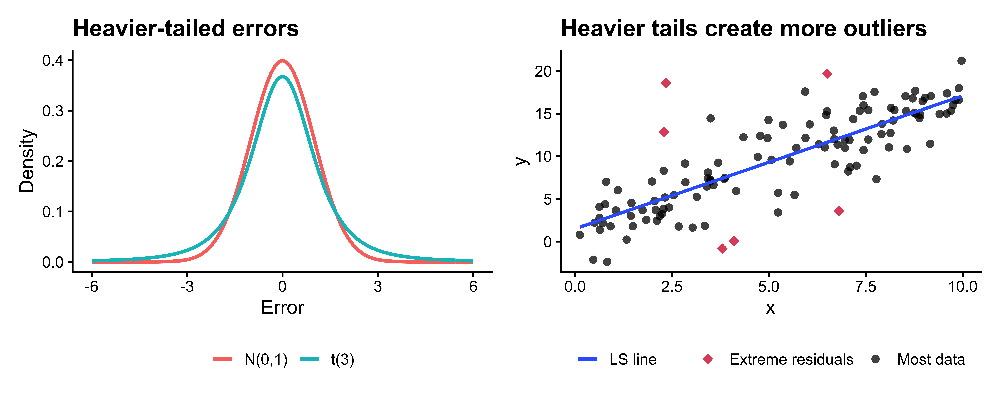
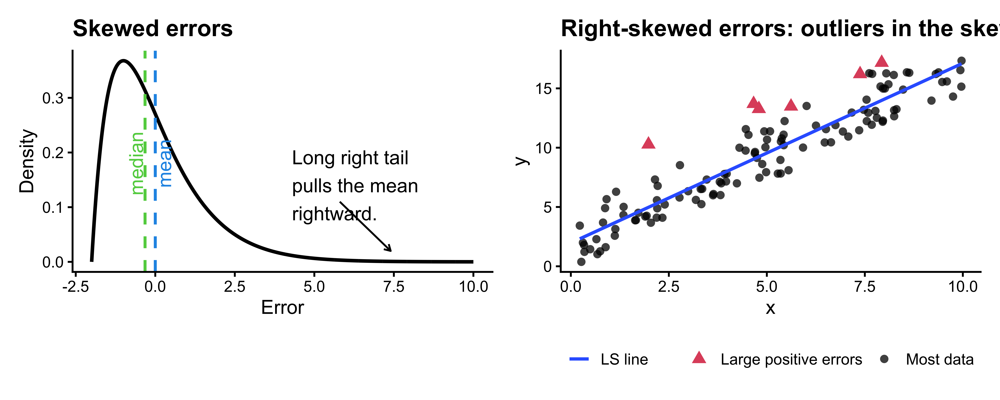
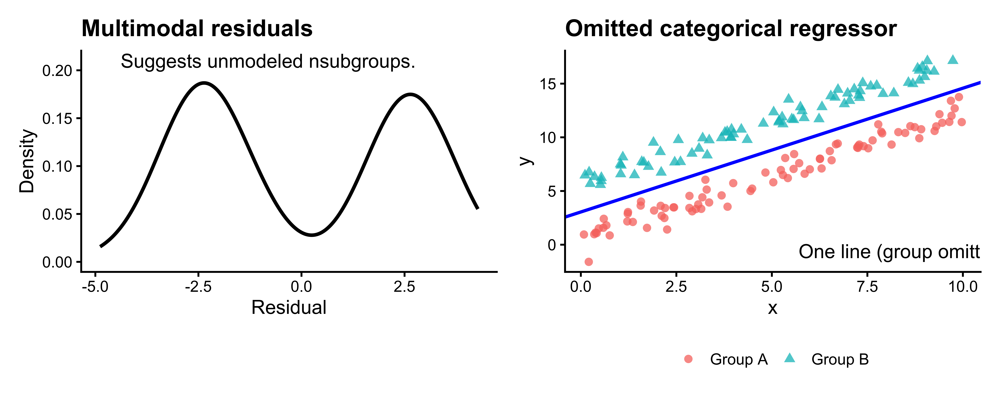
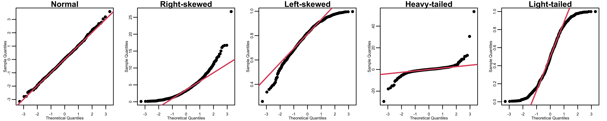
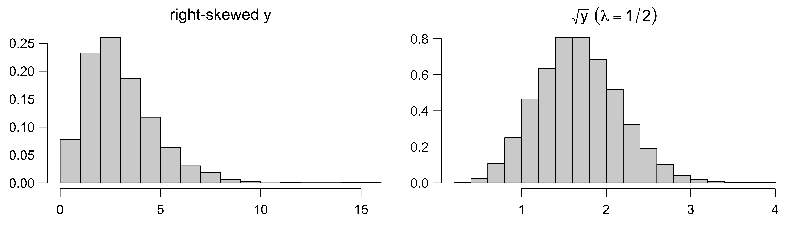
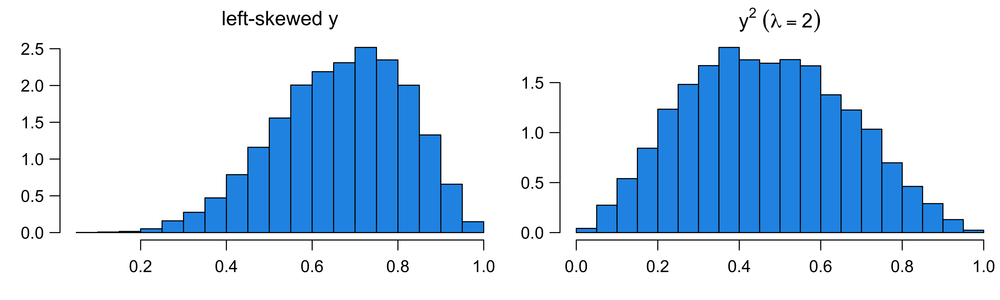
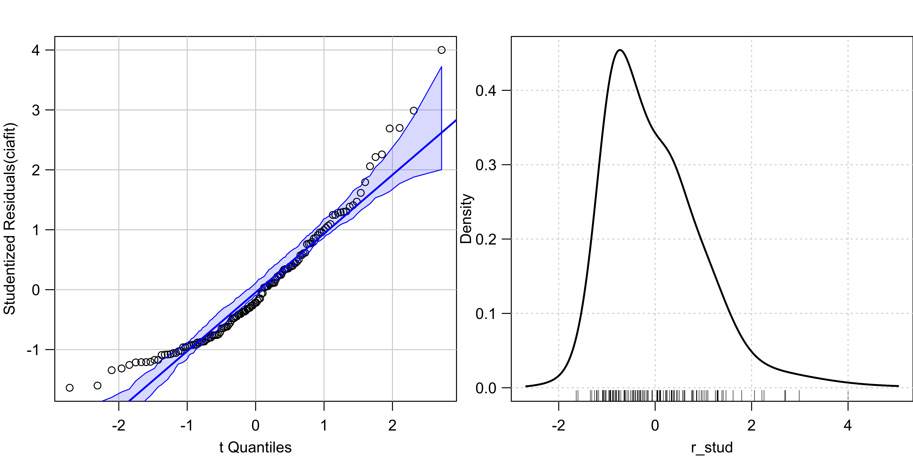

Regression Diagnostics
Normality
MATH 4780/MSSC 5780 Regression Analysis
What Do your Data Look Like
We have fitted regression \(\hat{y} = 3 + 0.5x\), \(\hat{\sigma}^2 = 1.24\), \(R^2 = 0.67\). What do the data look like?
. . .
Assumptions of Linear Regression
\(Y_i= \beta_0 + \beta_1X_{i1} + \beta_2X_{i2} + \dots + \beta_kX_{ik} + \epsilon_i\)
- \(E(Y \mid X)\) and \(X\) are linearly related.
- \(\small E(\epsilon_i) = 0\)
- \(\small \mathrm{Var}(\epsilon_i) = \sigma^2\)
- \(\small \mathrm{Cov}(\epsilon_i, \epsilon_j) = 0\) for all \(i \ne j\).
- \(\small \epsilon_i \stackrel{iid}{\sim} N(0, \sigma^2)\) (for inference and prediction purpose)

- So it’s not that uncommon to see violation of assumptions.
- Today, we are going to learn how to check whether those assumptions are valid or satisfied.
- And probably the following two weeks, if the assumptions are not satisfied, how do we deal with it. OK.
. . .
- For the purpose of estimating the regression line, normality is barely important at all.
- \(R^2\) tells us how good the model is fitted to the data, but says nothing about the correctness of the model.
- All the inference results are based on the assumed model.
Model Adequacy Checking and Correction
Non-normality
Non-constant Error Variance
Non-linearity and Lack of Fit
- This week we are going to learn some methods to correct model inadequacy.
- We can either transform our data, our use a more general method, called Generalized Least Squares or Weighted Least Squares.
- \(\epsilon_i \stackrel{iid}{\sim} N(0, \sigma^2)\): mean 0, constant variance, normally distributed, and uncorrelated.
- \(E(\epsilon_i) =0\) implies the function form of the model (linearity) is correct.
Non-normality
Without normality,
-
Heavier tailed errors:
- LS estimators do not have the smallest variance among unbiased estimators.
- give rise to outliers.

Gauss-Markov does not require normality. With heavy-tailed errors: - OLS remains BLUE under the Gauss–Markov assumptions, but need not be the most efficient estimator among all unbiased estimators. - Extreme errors occur more frequently, producing more observations far from the regression surface. - Because least squares squares residuals, these extreme observations can have a disproportionately large effect on the fit.
Non-normality
-
Skewed errors:
- tend to generate outliers in the direction of the skew.
- the conditional mean of \(y\) given \(x\) may not be a good measure of center of a highly skewed distribution.

Non-normality
-
Multimodal errors:
- suggest the omission of one or more categorical regressors.

- \(\epsilon_i \stackrel{iid}{\sim} N(0, \sigma^2)\): mean 0, constant variance, normally distributed, and uncorrelated.
- The form of the model (linearity) and the specification of the predictors are correct.
- Check model adequacy by residual plots and lack-of-fit tests.
- Methods for building models when some of the assumptions are violated.
- data transformation
- generalized least squares (GLS) and weighted least squares (WLS)
Detecting Nonnormality
The R-student residuals \(t_i \sim t_{n-p-1}\) if the model assumptions are correct.
Compare the distribution of the \(t_i\)s to \(t_{n-p-1}\) in QQ plot.
- One way to address the assumption of normality is to compare the distribution of the R-student residuals to \(t_{n-p-1}\) in QQ plot.
. . .

QQ plot of R-Student Residuals Comparing \(t_{n-p-1}\)
Code
car::qqPlot(fit_delivery, id = TRUE, col.lines = "blue",
reps = 1000, ylab = "Ordered R-Student Residuals", pch = 16)
- The
carpackage calls the R-student residuals studentized residuals. - if put lm object,
car::qqPlotautomatically create qqplot for R-student residual comparing with \(t_{n-p-1}\) distribution. - No severe problem in delivery data
- id = controls point identification; if FALSE, no points are identified; can be a list of named arguments to the showLabels function; TRUE is equivalent to list(method=“y”, n=2, cex=1, col=carPalette()[1], location=“lr”), which identifies the 2 points with the 2 points with the most extreme verical values — studentized residuals for the “lm” method.
Density plot of R-Student Residuals

- The QQ plot draws attention to the tail behavior of the R-student residuals but is less effective in visualizing their distribution as a whole.
- Check histogram or smooth density plot of the R-student residuals to get the general shape of the distribution.
- May be better to add another categorical regressor
- car::densityPlot(rstud, adjust = 2, xlab = “R-Student Residuals”)
Correcting Nonnormality
- A response that is close to normal usually makes the assumption of normal errors more tenable. 1
-
Heavier tailed errors:
- Use robust regression downweighting extreme residuals
-
Skewed errors:
- Transform response data for symmetry
-
Multimodal errors:
- Add one or more relevant categorical variables
Want the error or the response conditional on \(x\)s to be like normal after correction.
. . .
The regression model (we discuss) does not assume or require that predictors be normally distributed.
It is possible for raw (unconditional) data \(y\) to be far from normally distributed.
- Least absolute deviation regression (Timothy)
Transformation for Symmetry
Power transformation: \(y \rightarrow y^{\lambda}\)
- make the distribution of \(y\) more normal, at least more symmetric.
- \(y\) can take on positive values only.
- \(y \rightarrow \ln(y)\) for \(\lambda = 0.\)
. . .
Ladder of powers and roots (Tukey, 1977):
- No transformation: \(\lambda = 1\)
-
Descending: spreads out the small values of \(y\) relative to the large values.
- \(\lambda = 1/2\) (square root); \(\lambda = 0\) (natural log); \(\lambda = -1\) (inverse)
-
Ascending: spreads out the large values relative to the small values.
- \(\lambda = 2\) (square); \(\lambda = 3\) (cube)
if \(\lambda\) is descending from \(1\) to \(-1\), the fransformation increasingly spreads out the small values of \(y\) relative to the large values.
. . .
The order of \(y\) is reversed if \(\lambda < 0\) is used. Negative powers are often given a minus sign to preserve ordering.
Correcting Skewness by Power Transformation


Box-Cox Transformation on \(y\)
A modified power transformation by Box and Cox (1964):
\[y^{(\lambda)} = \begin{cases} \frac{y^{\lambda}-1}{\lambda}, & \quad \lambda \ne 0\\ \ln y, & \quad \lambda = 0 \end{cases}\]
- For all \(\lambda\), \(y^{(\lambda)} = 0\) at \(y = 1\).
- The order of the transformed data \(y^{(\lambda)}\) is the same as that of \(y\), even for \(\lambda < 0.\)

- The derivative w.r.t. \(y\) of \(y^{(\lambda)}\) at \(y = 1\) is 1 for any \(\lambda\).
Box-Cox Transformation on \(y\): Choose \(\lambda\) Analytically
The model to be fit is \[y_i^{(\lambda)} = \beta_0 + \beta_1x_{i1}+ \cdots + \beta_kx_{ik} + \epsilon_i\]
Choose \(\lambda\) so that, after transformation and refitting the regression, the residuals are as compatible as possible with the linear-model assumptions.
CIA World Factbook Data
gdp infant gini health region
Albania 11.1 12.8 34 6.0 Europe
Algeria 14.3 21.0 35 5.2 Africa
Argentina 22.1 9.7 46 8.5 America
Armenia 7.4 13.5 31 4.5 Europe
Australia 46.6 4.4 30 9.1 Oceania
Austria 45.4 3.5 26 11.5 Europe
Azerbaijan 17.9 25.7 34 5.4 Asia
Bangladesh 3.4 44.1 32 3.6 Asia
Belarus 18.2 3.6 27 5.0 Europe
Belgium 41.7 3.4 26 10.8 Europe
Benin 1.9 55.7 36 4.5 Africa
Bhutan 7.7 35.9 39 3.8 Asia-
gdp: GDP per capita in thousands of U.S. dollars -
infant: Infant mortality rate per 1000 live births -
gini: Gini coefficient for the distribution of family income -
health: Health expenditures as a percentage of GDP
R-Student Residuals
- See how
gdp,healthandginiaffectinfant. - R-Student residuals are right-skewed, suggesting transforming the response, infant mortality, down the ladder of powers.
Code
ciafit <- lm(infant ~ gdp + health + gini, data = CIA)
r_stud <- rstudent(ciafit)
car::qqPlot(ciafit, id = FALSE)
car::densityPlot(r_stud)
Box-Cox Transformation
Code
mat <- matrix(r_stud)
for (lam in c(0.5, 0, -0.5, -1)) {
refit <- update(
ciafit, car::bcPower(infant, lam) ~ .
)
mat <- cbind(rstudent(refit), mat)
}
colnames(mat) <- c(-1, -0.5, "log", 0.5, 1)
boxplot(
mat, id = FALSE,
xlab = expression("Powers," ~ lambda),
ylab = expression(
"R-Student Residuals for "
~ Infant ^ (lambda))
)
Choose \(\lambda\) Analytically
summary(car::powerTransform(ciafit, family = "bcPower"))bcPower Transformation to Normality
Est Power Rounded Pwr Wald Lwr Bnd Wald Upr Bnd
Y1 -0.22 -0.33 -0.37 -0.072
Likelihood ratio test that transformation parameter is equal to 0
(log transformation)
LRT df pval
LR test, lambda = (0) 8 1 0.005
Likelihood ratio test that no transformation is needed
LRT df pval
LR test, lambda = (1) 181 1 <2e-16- \(\hat{\lambda} = -0.22\), and the \(95\%\) CI for \(\lambda\) is \([-0.37, -0.07]\).
- \(\lambda = 1\) not in the interval, providing support for transforming response.
- \(\lambda = 0\) (log transformation) is slightly outside the interval.
car::powerTransform() uses the maximum likelihood-like approach to select a \(\lambda\) estimate, \(\hat{\lambda}\).
Other Issues
- Apply power transformations to data with zero or negative values by adding a positive constant to the data to make all values positive.
- \(\log(y + 10)\) if all \(y > -10\).
因此如果 (c) 選得非常大，log transformation 原本「壓縮大值」的效果反而會變弱。
. . .
- Power transformations are effective when the ratio of the largest to smallest values is sufficiently large.
- If \(y_{max}/y_{min} \approx 1\), power transformations are nearly linear.
- Increase the ratio by subtracting a positive constant \(c < y_{min}\), \((y_{max} - c)/(y_{min}-c)\)
. . .
- If acceptable, choose log transformation for direct interpretation.
(Intercept) gdp health gini
3.016 -0.044 -0.055 0.022 - Comparing two countries, the one with one unit of
dgphigher is expected to have the infant mortality rate (approximately) 4.3% lower than the other.
Hawkins and Weisberg (2017) - Skewed conditional distribution of \(y\) is not a good measure of center. + Create a model for conditional median of the response. (Quantile regression) - OLS regression of the original variable is used to to estimate the expected arithmetic mean and OLS regression of the log transformed outcome variable is to estimated the expected geometric mean of the original variable.
Footnotes
Mathematically, an unconditional normal distribution of \(Y\) does not guarantee a conditional normal distribution of \(Y\) given \(X\). Normal-looking \(Y\) is just a preliminary evidence for normal errors.↩︎